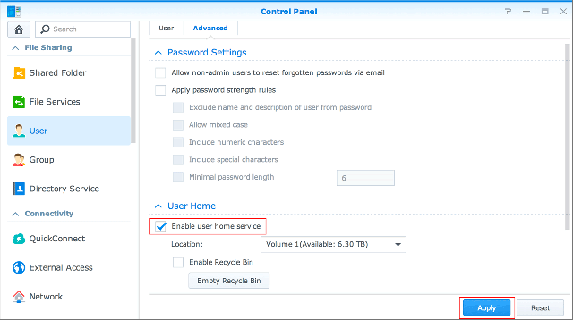
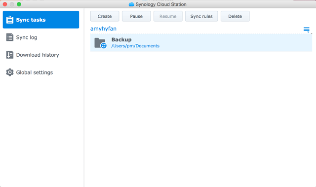

Descripción general
Cloud Station no es solo un software sofisticado de sincronización entre plataformas, los usuarios lo pueden utiliza como un medio más inteligente para realizar copias de seguridad de sus ordenadores personales. Estos son algunos beneficios obtenidos al utilizar Cloud Station como su compañero de copia de seguridad. En primer lugar, la replicación en tiempo real proporciona una RPO mejor, un periodo más corto en el que se pueden perder datos (no recuperables) del ordenador debido a un incidente importante. No solo es instantánea, sino que también le ayuda a ahorrar ancho de banda de manera drástica, comparado con la realización de copias de seguridad tradicional, que utiliza grandes cantidades de ancho de banda en un momento determinado. También puede filtrar fácilmente los archivos de los que no quiere hacer copia de seguridad dentro de la misma carpeta, configurando el tamaño de archivo o tipo de archivo en su ordenador personal cliente. Cloud Station también puede retener hasta 32 versiones históricas de cada archivo y le permite restaurarlo en el PC cliente desde el lado del servidor (NAS).
1. Configurar Cloud Station en eCore Server
- Inicie sesión en DSM con una cuenta que pertenezca a administrators.
- Iniciar Cloud Station.
- Si no ha habilitado la característica de inicio de usuario, se le pedirá que lo haga. Haga clic en OK.
- Se le redirigirá a la página de configuración de usuario. Habilite los homes de usuario y haga clic en Aplicar. 
- Ahora vuelva a Cloud Station y se le pedirá que la habilite. Haga clic en Sí.
- Vaya a Privilegios y especifique los usuarios que podrán utilizar Cloud Station. Haga clic en Guardar.
- Configure una carpeta compartida en su eCore Server con objeto de realizar una copia de seguridad. Para hacer esto vaya a Panel de control > Carpeta compartida y haga clic en Crear.
- Nombre su carpeta y rellene los detalles correspondientes. Haga clic en OK. Por ejemplo, nombraremos la carpeta Copia de seguridad.
- En la pestaña Permisos, especifique los usuarios que podrán acceder a la carpeta. Por ejemplo, le daremos a admin permisos de lectura/escritura de la carpeta. Haga clic en OK.
- Vaya a Cloud Station > Configuración > Compartir y seleccione la carpeta Copia de seguridad. A continuación, haga clic en Habilitar.


2. Configurar Cloud Station en un PC con Windows
Siga los pasos para configurar Cloud Station en su Mac o PC
2.1 Para PC
- Vaya a Cloud Station > Visión general y haga clic en el botón Descargar.
- Haga clic en el botón para descargar Cloud Station para un PC con Windows. (También puede descargar Cloud Station desde el Centro de descargas de Synology.)
- Abra el instalador de su ordenador y siga las instrucciones para instalar Cloud Station.
- Tras la instalación, ejecute Cloud Station en su ordenador. Haga clic en Iniciar ahora.
- Introduzca la dirección para el eCore Server que ejecuta Cloud Station (o QuickConnect ID), nombre de usuario y contraseña. (También puede hacer clic en el icono de búsqueda de la derecha y Cloud Station buscará automáticamente otros eCore Server en su LAN.) Haga clic en Siguiente.
- Seleccione cómo desea configurar su tarea (aquí seleccionaremos Configuración avanzada, dado que estamos configurando una carpeta específicamente para la copia de seguridad). Haga clic en Siguiente.
- Seleccione una carpeta en su ordenador para mantenerla sincronizada con la carpeta de copia de seguridad que ha creado anteriormente en su eCore Server. Haga clic en Siguiente.
- Haga clic en Listo para completar la configuración.


Para crear otra tarea:
- Vaya a Cloud Station > Configuración y habilite una carpeta compartida para esta tarea nueva. Mi ejemplo es photo. Asegúrese de tener privilegios de lectura/escritura para photo.
- De vuelta en Cloud Station en su PC, haga clic en Crear.
- Seleccione un eCore Server para la nueva tarea. Aquí seleccionaremos eCore Server conectado ya que estamos creando otra tarea para el mismo eCore Server. Haga clic en Siguiente.
- Seleccione Configuración avanzada y siga las instrucciones del asistente para completar la configuración.


2.2 Para Mac
- Vaya a Cloud Station > Visión general y haga clic en el botón Descargar.
- Haga clic en el botón para descargar Cloud Station para Mac. (También puede descargar Cloud Station desde el Centro de descargas de Synology.)
- Abra el instalador de su ordenador y siga las instrucciones para instalar Cloud Station.
- Tras la instalación, ejecute Cloud Station en su ordenador. Haga clic en Iniciar ahora.
- Introduzca la dirección para el eCore Server que ejecuta Cloud Station (o QuickConnect ID), nombre de usuario y contraseña. (También puede hacer clic en el icono de búsqueda de la derecha y Cloud Station buscará automáticamente otros eCore Server en su LAN.) Haga clic en Siguiente.
- Seleccione cómo desea configurar su tarea (aquí seleccionaremos Configuración avanzada, dado que estamos configurando una carpeta específicamente para la copia de seguridad). Haga clic en Siguiente.
- Seleccione una carpeta en su ordenador para mantenerla sincronizada con la carpeta de copia de seguridad que ha creado anteriormente en su eCore Server. Haga clic en Siguiente.
- Haga clic en Listo para completar la configuración.


Para crear una tarea nueva:
- Vaya a Cloud Station > Configuración y habilite una carpeta compartida para esta tarea nueva. Mi ejemplo es photo. Asegúrese de tener privilegios de lectura/escritura para photo.
- De vuelta en Cloud Station en su equipo, haga clic en Crear. 
- Seleccione un eCore Server para la nueva tarea. Aquí seleccionaremos eCore Server conectado ya que estamos creando otra tarea para el mismo eCore Server. Haga clic en Siguiente.
- Seleccione Configuración avanzada y siga las instrucciones del asistente para completar la configuración.

3. Recuperar datos desde Cloud Station
Si accidentalmente quita o sobrescribe un archivo, Cloud Station le permite recuperarlo fácilmente.
4.1 Para descargar una versión anterior de un archivo sincronizado en un PC
- Haga clic en el icono de Cloud Station en la bandeja del sistema y haga clic en el icono de la carpeta.
- Haga clic con el botón secundario del ratón en el archivo secundario y elija Synology Cloud Station > Examinar versiones anteriores.
- Encuentre la versión que desee descargar y haga clic en el icono de descargar.
- Introduzca el nombre del archivo y elija el destino en el que desea guardar el mismo.


4.1 Para descargar una versión anterior de un archivo sincronizado en un Mac
- Haga clic en el icono de Cloud Station en la bandeja del sistema y haga clic en el icono de la carpeta.
- Haga clic con el botón secundario del ratón en el archivo secundario y elija Synology Cloud Station > Examinar versiones anteriores.
- Encuentre la versión que desee descargar y haga clic en el icono de descargar.
- Introduzca el nombre del archivo y elija el destino en el que desea guardar el mismo.


4.3 Para descargar o restaurar una versión anterior de un archivo sincronizado de Cloud Station
- Vaya a Cloud Station > Historial de versiones y seleccione la carpeta Copia de seguridad que ha creado anteriormente.
- Seleccione el archivo que desea recuperar y haga clic en Acción > Examinar versiones anteriores.
- Seleccione la versión del archivo que desea descargar y haga clic en Descargar. O si no está seguro de que desea restaurar la versión seleccionada, haga clic en Restaurar y sobrescribirá su versión actual.


4. Observaciones importantes
- Conserve siempre las versiones históricas en caso de que un archivo se quite o se sobrescriba por accidente.
- En Configuración global puede configurar si se volverá a recuperar de su NAS o si se borrará en su NAS cuando elimine un archivo en su PC.
5. Protección adicional de sus datos
Para obtener más información acerca de cómo proteger y hacer copias de seguridad de sus datos, haga clic aquí para ver tutoriales que detallan otros servicios de copia de seguridad ofrecidos en DSM.